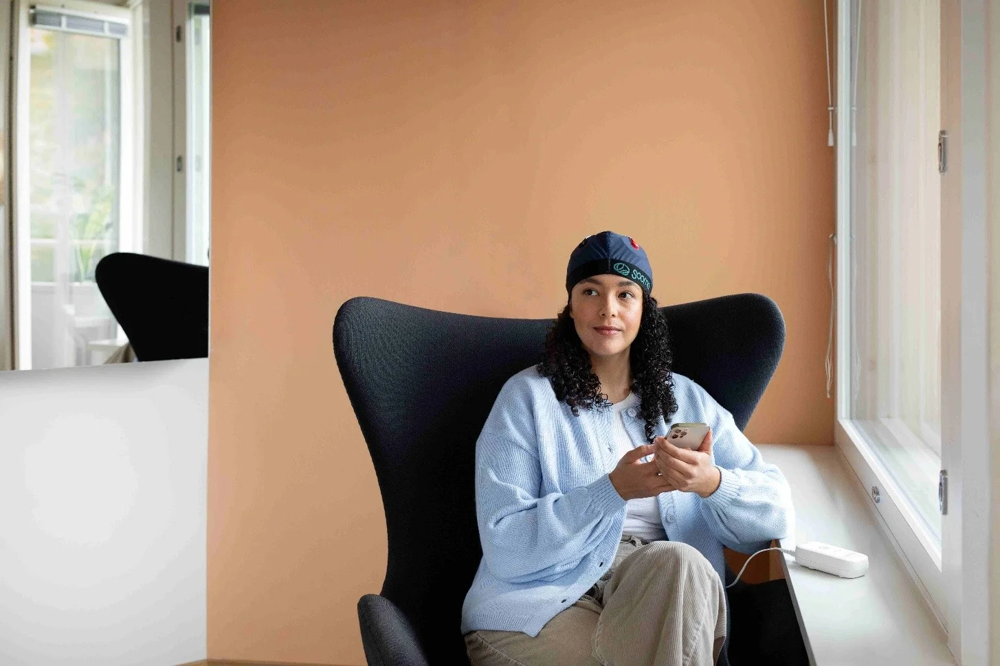
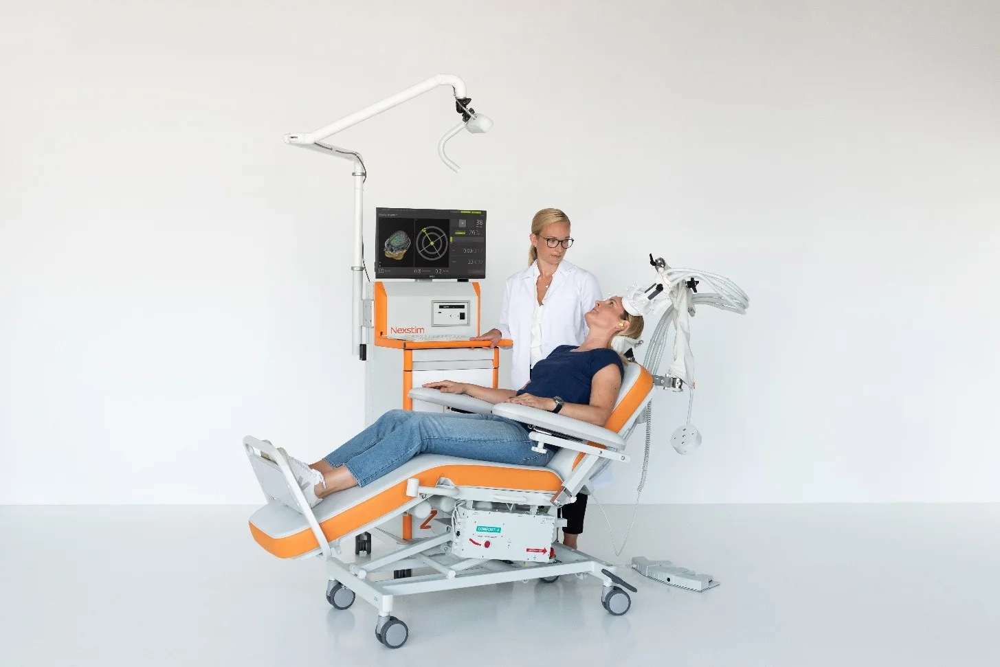

Aalto-yliopisto · Helsingin yliopisto · HUS
Voidaanko aivostimulaation hoitovastetta ennustaa?
Kiinnostaako sinua lääkkeetön hoito masennukseen? Etsimme tutkimukseen osallistujia, joiden masennusoireet eivät ole helpottaneet riittävästi lääkehoidoista huolimatta.
Tutkimme, voiko aivojen rakenteen ja toiminnan perusteella ennustaa, kenellä tasavirtastimulaatio (tDCS) tai magneettistimulaatio (rTMS) voisi lievittää masennusoireita.
Näin hakeudut tutkimukseen
- 24–36 viikkoa
- Osallistumisen kokonaiskesto
- 2 kuvantamiskäyntiä
- Aalto-yliopistolla
- 2 Hoitomuotoa
- Saat kaksi hoitoa: 12 viikkoa tDCS-hoitoa ja 8 viikkoa rTMS-hoitoa.
- Hoidot ja kuvaukset maksutta
- Matkat hoitoihin ja kuvantamiseen maksat itse.
Mitä osallistuminen tarkoittaa?
Osallistuminen on vapaaehtoista ja maksutonta. Voit myös keskeyttää tutkimuksen milloin tahansa.
Millaista tDCS-hoito on?
Tasavirtastimulaatiohoidon voi tehdä mukavasti kotona vaikka kirjaa lukien. Hoidon ajaksi puet päähineen, joka pitää kaksi elektrodia paikoillaan. Hoidon alussa päänahassa voi tuntua lievää kihelmöintiä tai kutinaa, mutta tuntemus usein helpottaa hoidon aikana.
Lue lisää tasavirtastimulaatiosta Käypä hoito -katsauksessa
Millaista rTMS-hoito on?
Hoidon aikana istut hereillä hoitotuolissa, ja pään lähelle asetettu kela antaa lyhyitä magneettipulsseja, jotka vaikuttavat aivosolujen toimintaan.
Haastattelu, kyselyt ja näyte
Tutkimukseen kuuluu kliininen haastattelu, digitaalisia oirekyselyitä ja geeninäyte. Geeninäytteen voi antaa veri- tai sylkinäytteenä.
Kaksi kuvantamiskäyntiä
Käyt tutkimuksen aikana kahdesti Aalto-yliopistolla. Tutkimuksessa mitataan aivojen toimintaa (MEG ja EEG) ja tehdään magneettikuvaus (MRI).
Tasavirtastimulaatiovaihe
Saat kuvantamiskäynnillä tDCS-laitteen, jolla hoitoa tehdään kotona 12 viikkoa, noin 30 minuuttia kerran päivässä.
Magneettistimulaatiohoito
Toistuvan magneettistimulaation (rTMS) hoitosarja kestää noin kaksi kuukautta. Hoitokäynnit ovat Helsingissä 4–5 kertaa viikossa virka-aikoina.

Mitä tutkimuksessa selvitetään?
Aalto-yliopiston, Helsingin yliopiston ja HUSin yhteisessä tutkimuksessa selvitetään, voiko aivojen rakennetta ja toimintaa mallintamalla ennustaa, miten masennusoireet muuttuvat aivostimulaatiohoidon aikana.
Tutkimuksessa tarkastellaan myös masennukseen liittyviä geneettisiä tekijöitä ja magneettikentän suuntauksen vaikutusta magneettistimulaatiohoidossa.
Vapaaehtoisuus ja suostumus
Osallistuminen on vapaaehtoista ja edellyttää suostumustasi. Voit kieltäytyä, keskeyttää osallistumisen tai perua suostumuksesi milloin tahansa syytä ilmoittamatta. Päätös ei vaikuta oikeuteesi saada tarvitsemaasi hoitoa. Osallistumisesta ei välttämättä ole sinulle henkilökohtaista hyötyä.
Näin hakeudut tutkimukseen
Jos olet kiinnostunut tutkimuksesta, ota yhteyttä omaan lääkäriisi. Tutkimukseen hakeudutaan lääkärin lähetteellä.
Kenelle tutkimus on tarkoitettu?
Tutkimukseen etsitään 18–67-vuotiaita, joilla on masennusdiagnoosi, hyvä suomen kielen taito ja kokemusta vähintään kahdesta mieliala- tai masennuslääkkeestä.
Nämä ovat osa osallistumisen edellytyksistä. Keskustele oman lääkärisi kanssa siitä, voisiko tutkimus sopia sinulle.
Testaa soveltuvuutesi tutkimukseen nopealla kyselyllä